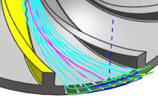
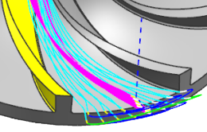
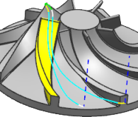
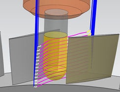

Multi-Blade milling cut level enhancements
What is it?
Enhancements to cut level control let you do the following:
-
Add multiple depths to slotting passes of roughing operations by using the new Reduce Depth per Cut when Embedded option. This option:
-
Reduces the load on the first cut.
-
Allows increased depth for the main cut levels.
-
Dramatically reduces roughing time.
-
-
Use fewer cut levels with the new calculation method for Interpolate from Shroud to Hub.
-
Control whether incomplete cut levels are created with warning messages or not created, by using the new Incomplete Levels option.
You can also create a multiple depth slotting operation using a large diameter straight tool.
Reduce Depth per Cut when Embedded
|
 |
 |
|
Reduce Depth per Cut when Embedded = |
Reduce Depth per Cut when Embedded = Number of Intermediate Cuts = 5 |
Interpolate from Shroud to Hub
|
(1) Range depth, (2) Depth per cut, (3) Hub, (4) Shroud |
|
NX 8.5 |
|
NX 8.0 |
Incomplete cut levels
|
|
 |
|
Incomplete Levels = Output and Warn |
Incomplete Levels = Omit |

Slotting operations

You can create a multiple depth slotting operation that uses a large diameter straight tool with the following parameter settings.
Blade Rough Drive Method dialog box, Drive Settings group:
-
Stepover = Passes
-
Number of Passes = 1
Cut Levels dialog box, Depth Options group:
-
Range Depth = Specify
-
Number of Cuts = 1
-
Number of Intermediate Cuts = as needed
|
Note |
You can also enter the same values for Min Angle From Part Axis and Max Angle From Part Axis to generate a 4-axis tool path on a 5-axis machine. |
Where do I find it?
|
Application |
Manufacturing |
|
Location in dialog box |
[Multi Blade] operation dialog box→Path Settings group→Cut Levels →Cut Levels dialog box→Depth Options group |